그룹웨어 · 업무 도구
그룹웨어 · 업무 도구 이용법
전자결재, 휴가, 출퇴근, 급여명세서처럼 회사 일을 처리하는 그룹웨어와, 팀이 함께 쓰는 위키 · 드라이브 · 메일을 설명합니다. 모두 창 오른쪽 위 메뉴(점 아홉 개) › 툴 묶음에서 엽니다. 화면은 PC와 휴대폰이 같고, 휴대폰에서는 화면 가득 열립니다.
1그룹웨어 열기
여는 곳과 탭

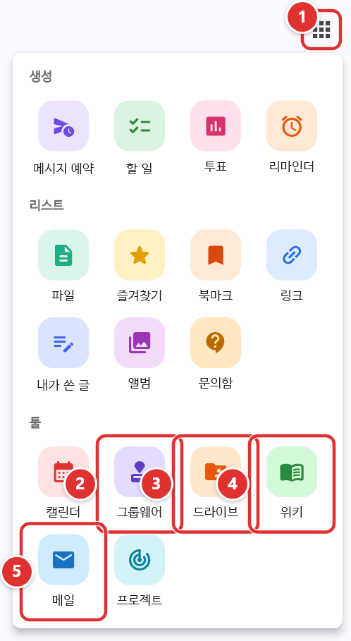
오른쪽 위 메뉴(점 아홉 개)를 누릅니다.
툴 묶음의 그룹웨어를 누릅니다. 내가 결재할 문서가 있으면 타일에 빨간 숫자가 붙습니다.
같은 툴 묶음의 3 드라이브, 4 위키, 5 메일은 아래 공유 드라이브 · 팀 위키 · 메일에서 설명합니다.
그룹웨어 화면 위쪽의 탭을 골라 씁니다.
| 탭 | 하는 일 |
|---|---|
| 결재 | 결재를 올리고, 내 차례인 결재를 승인 · 반려합니다(전자결재). 탭 이름 옆 숫자는 내가 결재할 문서 수입니다. |
| 휴가 | 남은 연차를 보고 휴가를 신청합니다. 팀원의 휴가 · 출장을 달력으로 봅니다(휴가와 연차). |
| 지출 | 쓴 돈을 지출 결재로 올리고, 법인카드 사용 건을 청구합니다(지출과 법인카드). |
| 급여 | 받은 급여명세서를 보고, 연말정산 공제 자료를 냅니다(급여명세서). |
| 출퇴근 | 출근 · 퇴근을 누르고 한 달 근무 기록을 봅니다(출퇴근). |
| 예약 | 회의실 · 장비 · 차량을 예약합니다(회의실 · 자원 예약). |
| 설문 | 여러 문항짜리 설문을 만들고 응답합니다(설문). |
| 업무일지 | 일일 · 주간 업무보고를 쓰고, 팀원의 보고를 읽습니다(업무일지). |
| 관리 관리자 | 결재 · 근태 관리자에게만 보입니다(관리 탭). |
팀마다 · 회사 전체
그룹웨어는 서버 설정에 따라 팀마다 따로 쓰거나 회사 전체가 하나로 씁니다. 화면 맨 위 제목(예: 그룹웨어 · 회사 전체)에 지금 범위가 보입니다.
- 팀마다면 결재선에 넣을 수 있는 사람, 연차, 출퇴근, 근무 시간이 모두 지금 고른 팀 안의 것입니다. 다른 팀의 그룹웨어를 보려면 그 팀으로 옮기세요.
- 회사 전체면 어느 팀에서 열어도 같은 그룹웨어가 보입니다.
- 결재자 · 결재선에는 정회원 이상만 넣을 수 있습니다.
2전자결재
휴가 · 지출 · 근태 수정과 여러 결재 양식(일반 기안서 · 출장 신청 · 구매 요청 · 연장근무 신청, 그리고 관리자가 만든 양식)을 정해 둔 사람들이 순서대로 결재합니다. 종이 결재판 대신 앱에서 올리고, 승인 · 반려 결과를 알림으로 받습니다.
결재 올리기

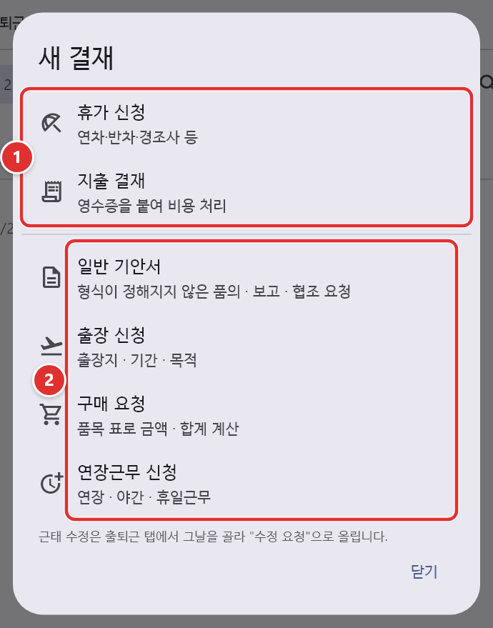
결재 탭 맨 앞의 새 결재를 누르고, 올릴 종류를 고릅니다 — 1 휴가 · 지출, 2 결재 양식. 관리자가 끈 양식은 목록에 나오지 않습니다.
양식의 칸을 채웁니다. 별표가 붙은 칸은 꼭 채워야 합니다. 필요하면 파일을 첨부합니다. 제목을 비워 두면 양식마다 정해진 제목이 저절로 붙습니다.
결재선을 확인합니다(아래). 대부분 저절로 채워져 있습니다.
결재 올리기를 누릅니다. 올린 결재에는 문서 번호(예: 휴가-2026-0012)가 붙고, 첫 결재자에게 알림이 갑니다.
| 기본 양식 | 쓰는 곳 |
|---|---|
| 일반 기안서(품의서) | 형식이 정해지지 않은 품의 · 보고 · 협조 요청. 예산과 시행일을 적을 수 있습니다. |
| 출장 신청 | 출장지 · 기간 · 목적을 적습니다. 승인되면 출장 날은 근태에서 결근으로 세지 않고, 캘린더의 출장에 보입니다. |
| 구매 요청 | 품목 표에 품명 · 수량 · 단가를 넣으면 금액과 합계를 계산해 줍니다. |
| 연장근무 신청 | 근무일 · 시간 · 종류(연장 · 야간 · 휴일근무)와 사유. 지난 30일부터 앞으로 60일 안의 날만 신청합니다. |
결재선 정하기(합의 · 전결 · 후결)
새 결재를 열면 조직도의 상위자(바로 위 상위자부터 위로)가 결재자로 미리 채워지고 안내 문구가 붙습니다. 관리자가 양식마다 기본 결재선이나 금액별 규칙을 정해 두었다면 그대로 채워집니다("규칙: …" 안내). 채워진 결재선은 고칠 수 있습니다 (아래 휴가 신청 그림의 3 · 4).
- 결재자 추가 · 참조자 추가로 사람을 더하고, 위로 · 아래로로 순서를 바꾸고, 빼기로 뺍니다. 결재자는 1~10명, 참조자는 10명까지입니다. 참조자는 결재하지 않고 보기만 하며 결과 알림을 받습니다.
- 이름 옆의 역할 칩을 누를 때마다 결재 → 합의 → 전결 → 후결로 바뀝니다.
- 자주 쓰는 결재선은 결재선 저장으로 이름을 붙여 두고(20개까지), 다음에 불러오기 ▾로 꺼내 씁니다.
| 역할 | 뜻 |
|---|---|
| 결재 | 보통 결재. 앞사람이 승인해야 내 차례가 됩니다. |
| 합의 | 이어 붙은 합의 칸끼리는 동시에 차례가 되고, 모두 동의해야 다음으로 넘어갑니다. 한 사람이라도 반려하면 결재가 끝납니다. 생각이 다르지만 막을 일은 아니면 반대 의견으로 진행(의견 필수)을 누릅니다 — 결재는 이어지고 반대 의견이 남습니다. |
| 전결 | 결재선에 한 명만 둘 수 있고, 그 사람이 승인하면 남은 칸은 생략되고 결재가 끝납니다. 관리자가 전결 규정(예: 지출 100만 원 이상은 본부장 전결)을 정해 두었으면 올릴 때 저절로 그 직책의 결재자가 전결이 됩니다. |
| 후결 | 결재선 맨 뒤에만 둡니다. 앞의 결재가 끝나면 문서는 바로 승인되어 효력이 생기고, 후결자는 나중에 후결 확인만 합니다(반려는 하지 않음). |
결재함과 알림

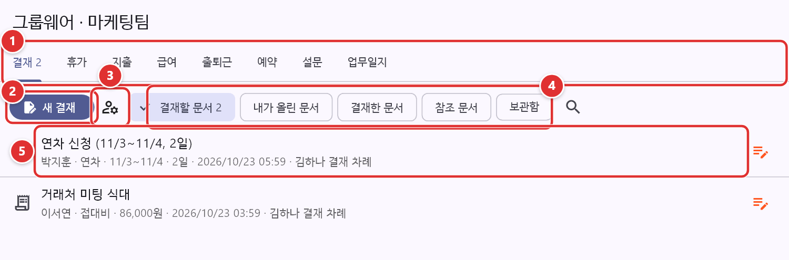
위쪽 탭 막대의 결재 옆 숫자는 내가 결재할 문서 수입니다.
새 결재로 결재를 올립니다(결재 올리기).
결재 설정(사람 아이콘)에서 서명·도장과 대결을 정합니다(아래).
결재함을 골라 문서를 봅니다: 결재할 문서 · 내가 올린 문서 · 결재한 문서 · 참조 문서 · 전체 문서(관리자) · 보관함(끝난 결재). 오른쪽 돋보기(검색)로 제목 · 문서 번호 · 올린 사람과 올린 날짜로 찾습니다.
문서를 누르면 문서 상세가 열립니다. 아래 줄에 올린 사람 · 종류 · 올린 시각 · 지금 누구 차례인지가 보입니다.
- 결재가 올라오거나 진행되면 다음 결재자 · 올린 사람 · 참조자에게 알림이 가고, 알림 센터의 결재 탭에 쌓입니다.
- 알림을 누르면 바로 그 문서 상세가 열립니다. 문서 위쪽 결재란에 칸마다 역할 · 서명(도장) · 이름 · 날짜가 보입니다.
- 그룹웨어 타일과 결재 탭의 숫자는 지금 내가 결재할 문서 수입니다.
승인 · 반려 · 회수

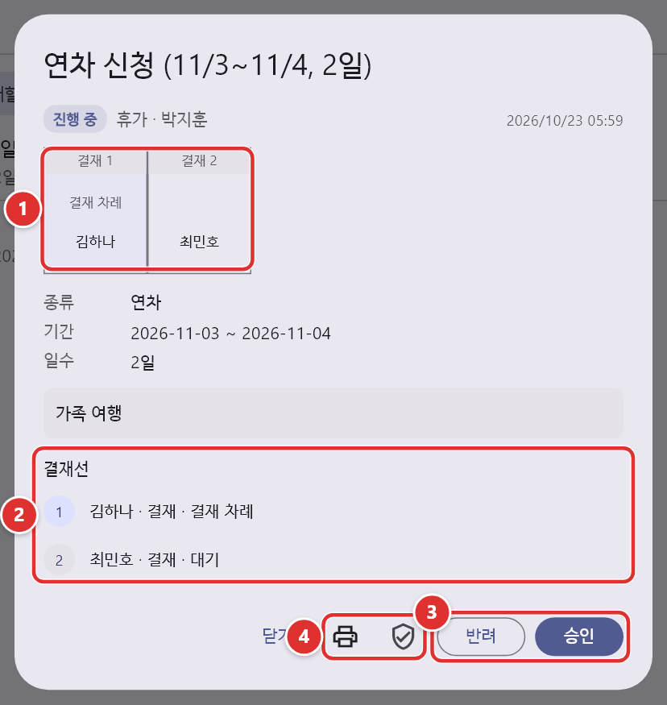
결재할 문서에서 문서를 눌러 엽니다. 위쪽 결재란에 칸마다 단계 · 서명(도장) · 이름이 보입니다.
아래 결재선에서 누가 결재했고 지금 누구 차례인지 확인합니다.
내용을 확인하고 승인(의견은 선택) 또는 반려를 누릅니다. 반려는 사유를 꼭 적어야 하고, 반려하면 결재가 그 자리에서 끝납니다.
프린터 단추는 인쇄 · PDF, 방패 단추는 전자서명 검증입니다(아래).
- 올린 사람은 아직 진행 중인 결재를 회수할 수 있습니다. 고쳐서 다시 올리세요.
- 관리자는 이미 승인된 결재를 사유와 함께 결재 취소할 수 있습니다. 휴가면 연차가 돌아오고, 근태 수정이면 기록이 처음 값으로 돌아갑니다.
서명·도장과 대결(부재)
결재 탭의 결재 설정(사람 아이콘)에서 정합니다.
- 내 서명·도장 — 마우스나 손가락으로 그리기, 붉은 원 안에 이름을 넣은 이름 도장 만들기, 그림 올리기 중 하나로 정합니다. 승인할 때의 서명이 결재란에 남고, 나중에 바꿔도 지난 결재는 그대로입니다. 서명이 없으면 "승인" 같은 붉은 글자 도장으로 보입니다.
- 대결(부재) 설정 — 휴가 · 출장으로 자리를 비우는 기간(90일까지)과 대신 결재할 사람을 정합니다. 그 기간에 내 차례가 된 결재는 맡은 사람의 결재함에도 들어가고, 맡은 사람이 처리하면 결재란에 "대결 ○○"으로 남습니다. 나도 그대로 직접 결재할 수 있습니다.
인쇄 · PDF · 전자서명 검증
- 문서 상세의 프린터 단추 › 인쇄(프린터를 고르거나 PDF로 저장) 또는 PDF로 저장(다운로드 폴더)을 누릅니다. A4 한 장에 문서 번호, 결재란(서명 그림 포함), 내용, 첨부 이름, 결재 이력이 들어갑니다.
- 승인 · 반려할 때마다 서버가 그 결정에 전자서명을 남깁니다. 문서 상세의 전자서명 검증을 누르면 칸마다 내용이 그대로인지(맞음) 바뀌었는지 보여 줍니다.
구매 · 출장 정산하기
승인된 구매 요청이나 출장 신청을 올린 사람은 문서 상세의 정산하기로 실제로 쓴 돈을 지출 결재로 올립니다. 예산(구매 합계 · 출장 예상 경비)이 금액에 미리 들어가고 예산과의 차이가 보입니다. 원래 문서에는 정산 결재 중 / 정산됨이 붙고, 결재함의 정산 안 됨으로 아직 정산하지 않은 문서만 모아 볼 수 있습니다.
3휴가와 연차
내 연차 보기

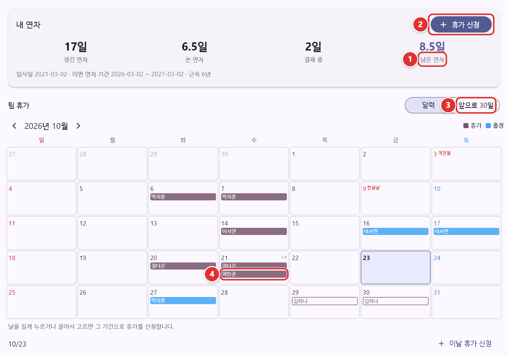
휴가 탭 위쪽의 내 연차에 생긴 연차 · 쓴 연차 · 남은 연차와 입사일 · 근속 연수가 보입니다. 결재 중인 휴가도 남은 연차1에서 미리 뺍니다. 시간 단위로 쓴 연차가 있으면 "13일 6시간"처럼 보입니다.
- 연차는 관리자가 정한 입사일로 근로기준법대로 계산합니다 — 입사 1년 미만은 한 달 채울 때마다 1일(최대 11일), 1년 이상은 15일에 3년차부터 2년마다 1일씩 늘어 최대 25일입니다. 회사에 따라 회계연도 기준으로 계산하기도 합니다.
- 입사일이 없으면 연차를 계산하지 못합니다. 이월 · 회사가 더 주는 휴가 등은 관리자가 연차 조정으로 맞추고, 그 내역도 여기에 보입니다.
휴가 신청
휴가 탭의 휴가 신청2을 누르면 휴가 신청 창이 뜹니다(결재 탭의 새 결재 › 휴가 신청도 같습니다).

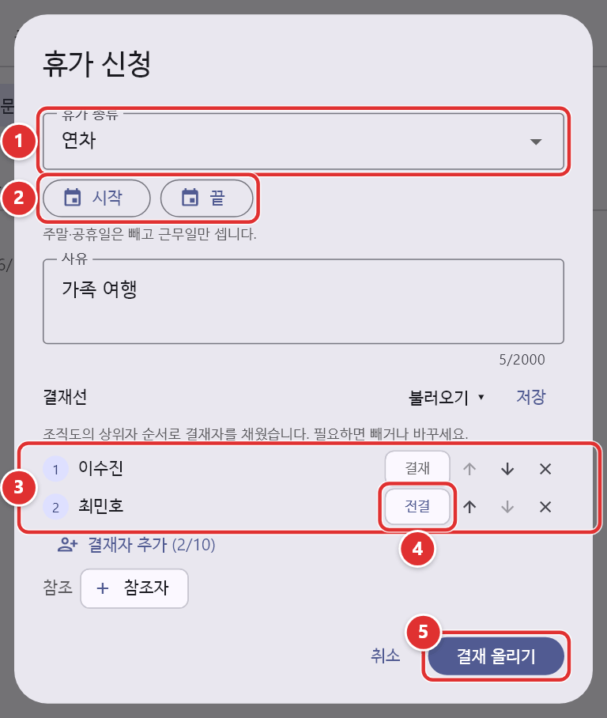
휴가 종류를 고릅니다 — 연차 · 오전 반차 · 오후 반차 · 반반차(2시간) · 시간 연차(1~7시간)는 연차에서 빠지고, 병가 · 경조사 · 공가 · 기타는 빠지지 않습니다(회사마다 이름과 종류가 다를 수 있습니다). 반반차 · 시간 연차는 그날의 시작 시각과 시간을 고릅니다.
시작 · 끝으로 기간을 고릅니다. 일수는 주말 · 공휴일을 뺀 근무일로 셉니다. 한 번에 60일까지이고, 남은 연차보다 많이 신청할 수 없습니다. 그 아래 사유를 적습니다.
결재선을 확인합니다. 조직도의 상위자가 미리 채워져 있습니다(결재선 정하기).
필요하면 이름 옆 역할 칩을 눌러 결재 → 합의 → 전결 → 후결로 바꿉니다. 그림은 두 번째 결재자를 전결로 바꾼 모습입니다.
결재 올리기를 누릅니다. 승인되면 캘린더의 팀 휴가에 보입니다.
팀 휴가 달력
휴가 탭 아래의 팀 휴가는 처음에 한 달 달력으로 보이고, 앞으로 30일3 목록으로 바꿀 수 있습니다 (위 그림).
- 칸마다 승인된 휴가 · 출장인 사람 이름4이 두 명까지 보이고(색은 달력 위 범례), 더 있으면 +n입니다. 내가 올려 결재 중인 휴가는 테두리만, 공휴일은 빨간 날짜입니다.
- 날을 누르면 그날 누가 무슨 휴가 · 어디로 출장인지 아래에 펼쳐집니다. 거기서 이날 휴가 신청으로 하루 휴가를 바로 신청합니다.
- 달력에서 날을 길게 누르거나 끌어서 기간을 고르면 그 기간으로 휴가 신청 창이 열립니다.
- 조직도에 부서가 있으면 달력 위의 부서 고르기로 그 부서 사람만 봅니다.
연차 사용 촉진 안내
회사가 연차 사용을 촉진하면 휴가 탭 위에 연차 사용 촉진 안내 카드가 뜹니다(카드를 보면 확인한 시각이 남습니다).
카드의 쓸 날 내기를 눌러 남은 연차를 쓸 날짜를 골라 냅니다. 휴가 신청은 그날 따로 올립니다.
기한 안에 내지 않으면 회사가 쓸 날을 정해 연차 사용 시기 지정 통보를 보냅니다.
통지서 PDF로 받은 통지서를 인쇄하거나 저장할 수 있습니다.
4출퇴근
출근 · 휴게 · 퇴근

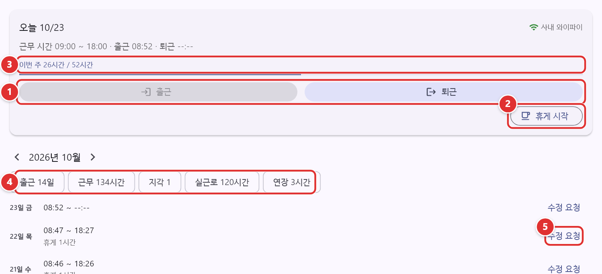
출퇴근 탭에서 출근을 누르고 사무실 · 외근 · 재택 중 하나를 고릅니다. 외근은 장소(예: 고객사(판교))를 적습니다. 일이 끝나면 퇴근을 누릅니다. 출근 · 퇴근은 하루에 한 번씩입니다. 밤을 넘겨 일했다면 다음 날 누른 퇴근도 전날 출근에 붙습니다(출근 뒤 20시간 안).
쉬는 시간에는 휴게 시작 · 휴게 끝을 누릅니다(하루 10번까지). 누르지 않은 날은 법정 휴게시간을 저절로 뺍니다.
- 시각은 서버 시각으로 남고, 사내 와이파이에서 눌렀는지도 함께 남습니다.
- 회사 설정에 따라 누르는 순간의 기기 위치를 한 번 함께 남길 수 있습니다(계속 따라다니지 않습니다). 위치 권한을 꺼 두면 위치 없이 누릅니다. 관리자가 "외근은 위치 필수"로 정했다면 외근 출근에는 위치가 있어야 합니다.
- 관리자가 출근 · 퇴근 알림을 켰으면, 근무 시작 뒤 · 근무 끝 뒤에 아직 누르지 않았을 때 알림이 옵니다. 누르면 그룹웨어가 열립니다.
- 시차출퇴근 · 선택근무 · 자율 출퇴근처럼 나만의 근무 형태가 정해져 있으면 탭 위에 표시되고, 지각 · 조퇴도 그 시간으로 셉니다.
한 달 기록과 주 52시간
- 탭 위의 이번 주 막대3는 이번 주(월~일) 실근로 시간입니다. 48시간부터 주의 색, 52시간을 넘으면 빨강입니다.
- 달 이름 아래 한 달 요약4(출근일 · 근무 시간 · 지각 · 실근로 · 연장 등)이 있고, 그 아래 목록에 날마다 출근 · 퇴근 시각과 지각 · 조퇴 · 퇴근 누락 · 결근 · 휴가 · 출장이 표시됩니다. 달 이름 옆 화살표로 지난 달을 봅니다.
- 회사 설정에 따라 한 주가 48시간을 넘으면 그날 승인된 연장 · 휴일근무 신청이 있어야 출근을 누를 수 있거나, 52시간을 채운 주에는 출근이 막힐 수 있습니다.
- 관리자가 통상시급을 정해 두었다면 가산 수당(참고용)도 보입니다. 실제 급여와 다를 수 있습니다.
기록 고치기 · 연장근무 신청
목록에서 고칠 날(지난 60일 안)의 수정 요청5을 누릅니다.
바른 출근 · 퇴근 시각과 사유를 적어 올립니다. 근태 수정 결재로 올라가고, 승인되면 기록이 바뀝니다(처음 값도 함께 남습니다).
정해진 시간보다 더 일해야 하면 결재 탭 › 새 결재 › 연장근무 신청을 올립니다. 승인된 시간은 그날 기록과 한 달 요약의 연장근무 시간에 합쳐집니다.
5지출과 법인카드

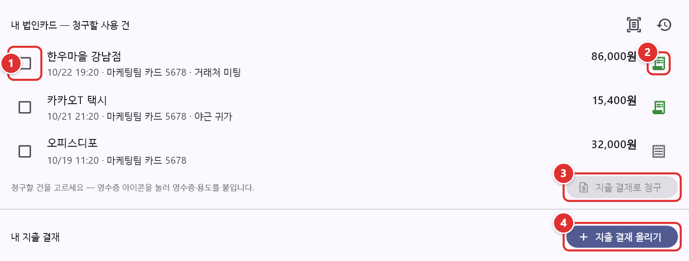
지출 결재 올리기
지출 탭의 지출 결재 올리기4를 누릅니다.
금액(원), 분류(교통비 · 식대 · 비품 등 — 회사마다 다름), 쓴 날, 내용을 적고 영수증(5개까지)을 붙입니다.
결재선을 확인하고 결재 올리기를 누릅니다. 아래 내 지출 결재에서 진행 상황을 봅니다.
내 법인카드 사용 건 청구하기
법인카드를 쓰는 사람이면 지출 탭 맨 위에 내 법인카드 사용 내역이 보입니다. 관리자가 카드사에서 받은 이용내역을 올리면 내 사용 건이 여기에 들어옵니다.
청구할 사용 건 왼쪽의 칸을 눌러 고릅니다(여러 개 고를 수 있습니다).
사용 건 오른쪽의 영수증 아이콘을 눌러 영수증을 붙이고 용도와 분류를 적습니다. 영수증을 붙인 건은 아이콘이 초록색입니다. 여럿이 함께 쓰는 카드면 내가 쓴 건을 내가 씀으로 가져옵니다.
지출 결재로 청구를 누릅니다. 금액(합계) · 쓴 날 · 분류 · 내용이 채워진 지출 결재 창이 열리고, 결재를 올리면 사용 건이 결재 중이 됩니다. 승인되면 정산됨이 되고, 반려 · 회수되면 다시 청구할 수 있습니다.
영수증 사진 한 장으로 맞는 사용 건을 찾는 영수증으로 사용 건 찾기도 있습니다(영수증 읽기가 켜져 있을 때). 카드 등록과 이용내역 올리기는 관리자가 지출 탭의 법인카드 관리에서 합니다.
6급여명세서
내 급여명세서
급여 탭의 내 급여명세서에 받은 명세서가 해마다(지급 · 실수령 합계와 함께) 모여 있습니다. 새 명세서가 오면 알림이 오고(알림에 금액은 넣지 않습니다), 아직 열지 않은 명세서에는 빨간 점이 붙습니다.

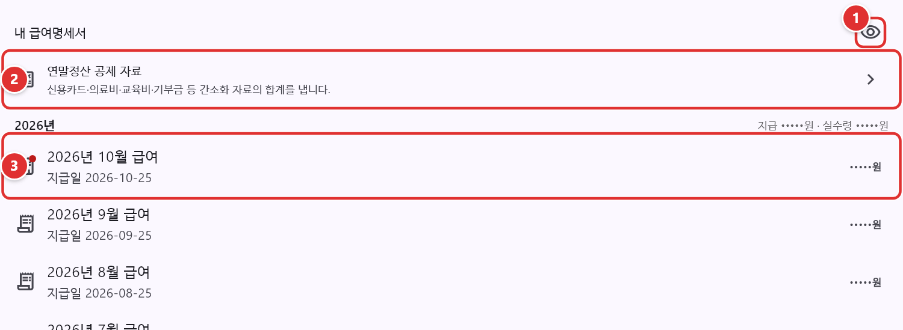
금액은 옆 사람이 보지 않게 처음에 가려져 있습니다. 금액 보기(눈 단추)를 누르면 보입니다. 회사가 "비밀번호 다시 묻기"를 켰다면 로그인 비밀번호를 한 번 더 넣어야 보입니다(10분 동안은 다시 묻지 않음).
연말정산 공제 자료에서 연말정산 자료를 냅니다(아래).
명세서를 누르면 지급 · 공제 항목과 계산 방법, 근무 내역이 보입니다. 처음 열면 확인한 시각이 담당자에게 남습니다. 인쇄 · PDF로 저장으로 A4 명세서를 받습니다.
보낸 뒤 명세서가 고쳐지면 정정 알림이 오고, 명세서에 정정 사유와 정정 전 실수령액이 함께 보입니다.
연말정산 공제 자료
급여 탭 › 연말정산 공제 자료에서 귀속 연도(◀ ▶ — 처음은 지난해)를 고르고, 홈택스 연말정산 간소화 자료의 항목별 합계(신용카드 · 의료비 · 교육비 · 기부금 · 월세 등)를 넣어 냅니다. 화면 아래에 내 명세서로 센 연말정산 어림(환급 · 추징)이 보입니다. 참고용 계산이고, 실제 정산은 회사의 세무 프로그램 · 홈택스로 합니다. 담당자가 확인하면 더 고칠 수 없습니다.
급여 관리(담당자) 급여 담당자
그룹웨어 관리자와 관리자가 정한 급여 담당자에게는 급여 탭에 급여 관리가 보입니다. 새 급여 대장으로 그달 대장을 만들고(지난 대장에서 이어받거나 항목 틀로 새로), 사람마다 명세서를 고친 뒤 보냅니다. 근태에서 근무 시간 · 수당 채우기, 4대보험 · 소득세 계산, 엑셀 내보내기 · 가져오기, 급여 이체 파일, 연말정산 자료, 퇴직금 계산, 4대보험 신고도 여기 있습니다. 계산 값은 참고용이니 확인한 뒤 보내세요.
7회의실 · 자원 예약
관리자가 등록한 회의실 · 장비 · 차량을 예약합니다. 같은 시간에 두 사람이 잡을 수 없게 서버가 막아 줍니다.
예약 현황 보기

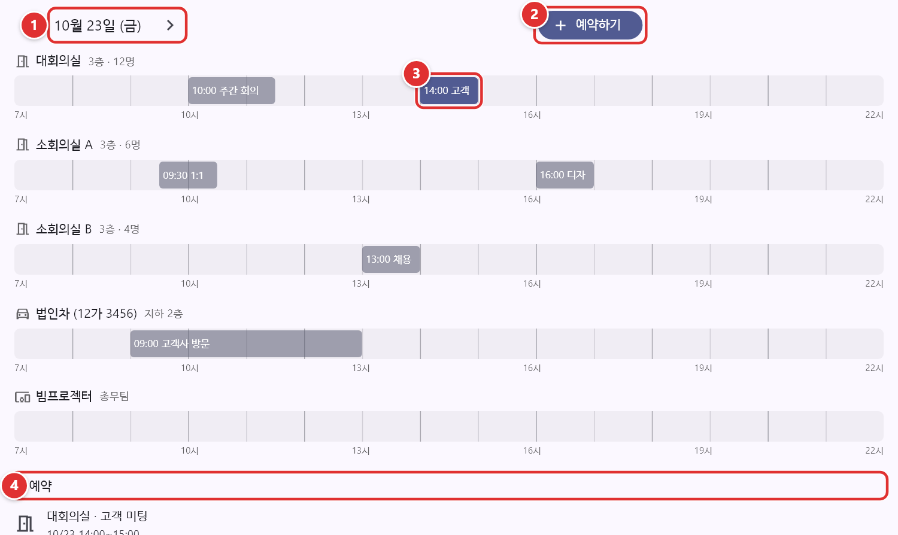
예약 탭에 날마다 자원별 시간표(07:00~22:00)가 보입니다. 날짜 옆 화살표로 다른 날을 봅니다(지난 날로는 가지 않습니다).
예약하기로 새 예약을 잡습니다(아래).
잡힌 예약은 막대로 칠해져 있고, 내 예약은 진한 색입니다. 막대를 누르면 잡은 사람과 시간이 보입니다.
아래 내 예약에 앞으로의 내 예약이 모여 있습니다.
- 준회원은 현황만 볼 수 있습니다.
예약하기
시간표의 빈 곳을 누르거나 예약하기를 누릅니다.
자원 · 날짜 · 시간(30분 단위) · 제목을 정합니다. 제목을 비우면 "자원 이름 예약"이 됩니다. 차량 · 장비는 여러 날 (차량·장비 대여)로 7일까지 잡을 수 있습니다.
회의실이 정해지지 않았으면 참석 인원 (회의실 추천)을 넣고 추천을 누르세요. 그 시간에 비어 있고 인원이 맞는 회의실을 알맞은 크기부터 보여 줍니다.
매주 같은 회의라면 반복 예약에서 매주 · 2주마다와 횟수(2~26회)를 고릅니다. 겹치는 날이 있으면 몇 번 겹치는지 알려 주고, 겹치는 날 빼고 잡기로 나머지만 잡을 수 있습니다.
저장합니다. 이미 잡힌 시간이면 누가 잡았는지와 함께 안내가 나옵니다.
- 승인 필요 표시가 있는 자원은 예약이 승인 대기로 잡히고, 승인할 사람이 승인해야 확정됩니다(그동안 그 시간은 다른 사람이 잡을 수 없습니다).
- 자원마다 예약할 수 있는 사람 · 요일 · 시간대 · 한 번에 쓸 시간이 정해져 있을 수 있습니다. 예약 창에 예약 규칙으로 보입니다.
- 취소는 예약을 누르고 예약 취소. 반복 예약은 이 회차만 취소 · 이 회차와 이후 모두 취소 중에서 고릅니다.
- 예약 시작 전(기본 10분 전)에 알림이 옵니다. 예약 탭에서 잡은 내 예약은 캘린더의 회의실 예약에도 보입니다.
캘린더 일정에 회의실 붙이기
회의 일정을 만들면서 회의실도 함께 잡을 수 있습니다. 캘린더 일정 만들기 창의 회의실·자원 칸을 누르면 그 일정 시간에 비어 있는 자원이 보입니다. 고르면 일정을 저장할 때 예약도 함께 생기고, 일정 시간을 옮기면 예약도 옮겨지며, 일정을 지우면 예약도 지워집니다. 한 일정에 5개까지 붙일 수 있고, 반복 일정에는 붙일 수 없습니다.
8설문
대화방의 투표는 한 문항이지만, 설문은 여러 문항을 한 번에 묻습니다.

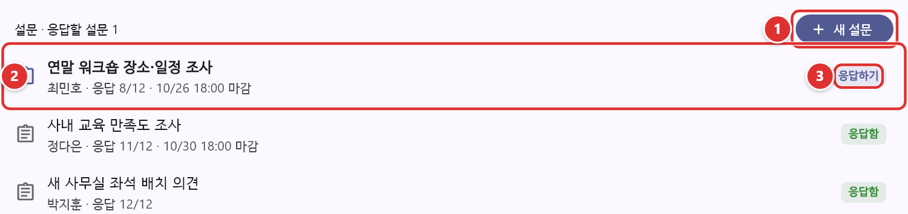
설문 탭의 새 설문을 누르고 제목과 설명(선택)을 씁니다.
문항 추가로 문항을 더합니다(30개까지). 문항마다 하나 고르기 · 여러 개 고르기(보기 2~20개), 글, 별점(1~5점) 중 하나를 고르고 필수 여부를 정합니다.
받는 사람(모두 또는 고른 사람), 익명 여부, 결과 공개(만든 사람만 · 응답한 사람도 · 모두에게), 마감(고른 날 18시)을 정하고 보내기를 누릅니다.
- 받는 사람에게는 알림이 가고, 설문 목록 위쪽에 응답할 설문2이 굵게 보입니다. 설문을 눌러(응답하기3) 답하고, 마감 전까지 응답 고치기로 고칠 수 있습니다.
- 만든 사람은 결과 보기로 보기별 막대 · 비율, 별점 평균, 글 답, 응답한 사람 · 아직 안 한 사람을 봅니다(익명이면 누가 답했는지는 나오지 않습니다).
- ⋯에서 안 한 사람에게 요청(한 시간에 한 번 알림), 마감, 설문 삭제를 합니다.
9업무일지

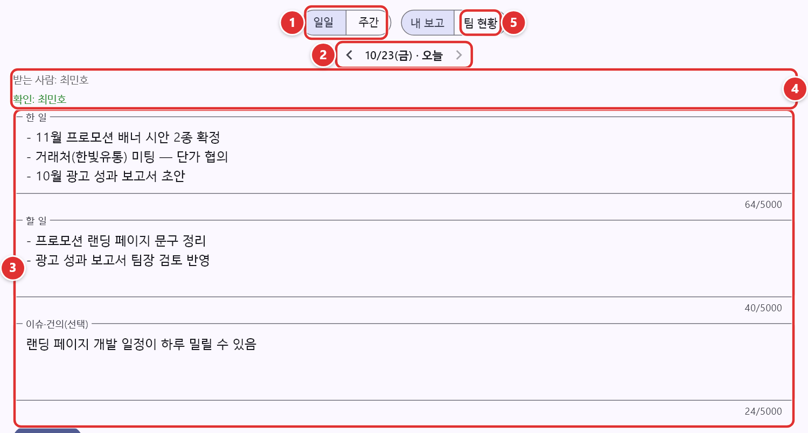
업무일지 탭에서 일일 · 주간 중 하나를 고릅니다.
날짜 양옆의 화살표로 지난 기간도 쓸 수 있습니다(아직 오지 않은 날은 쓰지 않습니다).
한 일 · 할 일 · 이슈·건의(선택)를 쓰고 올리기를 누릅니다. 한 일이나 할 일 중 하나는 꼭 써야 합니다. 주간 보고는 이번 주 일일 보고 불러오기로 그 주 일일 보고의 "한 일"을 날짜와 함께 가져올 수 있습니다. 올린 뒤에도 고치기로 고칠 수 있습니다.
받는 사람은 조직도의 상위자(와 결재 · 근태 관리자)이고, 처음 올릴 때 상위자에게 알림이 갑니다. 상위자가 읽으면 확인: 이름이 붙습니다.
팀 현황은 나를 상위자로 둔 사람이 있을 때 씁니다(아래).
나를 상위자로 둔 사람이 있으면 팀 현황에서 그 기간 보고를 아직 안 쓴 사람이 위로 보고(제출 N/M), 눌러서 읽고 댓글을 답니다.
10관리 탭(관리자) 결재·근태 관리자
그룹웨어가 팀마다면 그 팀의 소유자 · 계정 등급 관리자 · 서버 운영자, 회사 전체면 계정 등급 관리자 · 서버 운영자에게 관리 탭이 보입니다.
| 항목 | 하는 일 |
|---|---|
| 구성원 | 사람마다 입사일(연차 계산의 기준) · 통상시급을 정하고, 연차를 0.5일 단위로 조정합니다(사유 필수). 한 달 근태 요약과 엑셀 내보내기. |
| 근무 시간 · 유연근무 | 기본 근무 시간, 사람마다의 근무 형태(시차출퇴근 · 선택근무 · 자율 출퇴근 · 탄력 근무). |
| 주 52시간 | 구성원별 한 주 근로시간. 알리기만 / 결재를 받게 / 막기 중에서 고릅니다. |
| 출근 · 퇴근 알림 | 누르지 않은 사람에게 알림을 보낼지와 시각. |
| 연차 사용 촉진 | 사람마다 촉진 단계를 보고 1차 안내 · 2차 통보를 보냅니다. 통지서 PDF. |
| 휴가 종류 · 지출 분류 | 휴가 종류의 이름 바꾸기 · 끄기 · 더하기, 지출 분류 목록. |
| 결재 양식 | 기본 양식 켜고 끄기, 양식 만들기(칸 종류 · 필수 · 순서), 양식마다의 기본 결재선. |
| 결재선 규칙 · 전결 규정 | 결재 종류와 금액마다 상위자를 어디까지 채울지, 어느 직책이 전결할지. |
| 결재 통계 | 달마다 건수 · 승인 · 반려 · 평균 처리 시간, 결재자별 응답 시간. 엑셀로 내보내기. |
| 회의실 · 자원 | 자원 등록, 승인 필요 · 예약 제한, 사용 통계, 회의실 앞 태블릿 화면(사용 중 / 비어 있음) 주소. |
바꾼 내용은 서버의 감사 로그에 남습니다. 근태 · 연차 기록의 법적 의무(보존 기간, 서면 통지 등)는 노무 담당과 확인하세요.
11조직도
부서와 사람을 나무 모양으로 보여 줍니다. 여기서 정한 상위자가 결재선 추천과 업무일지 받는 사람의 기준이 됩니다.

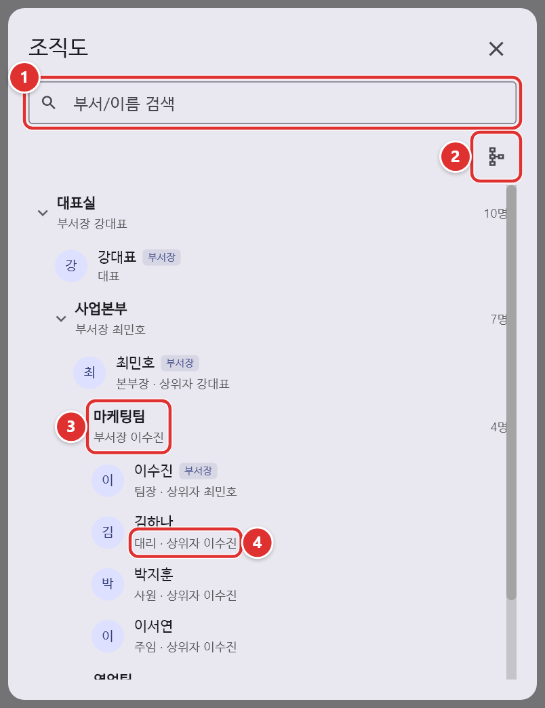
- 여는 곳 — PC는 창 오른쪽 위 알림 센터 왼쪽의 조직도(나무 모양) 단추, 팀 리스트 화면에서도 오른쪽 위에 있습니다. 회사 조직도는 정회원 이상, 팀 조직도는 그 팀 멤버가 봅니다.
- 부서 탭 — 맨 위 부서부터 펼쳐진 트리로 부서마다 부서장과 인원3, 구성원과 각자의 상위자4가 보입니다. 부서를 누르면 펼치고 접습니다. 검색칸1에 이름을 넣어 부서나 사람을 찾고, 그림으로 보기2로 바꾸면 가로로 펼친 조직도를 확대 · 축소하며 봅니다.
- 상위자는 따로 정한 사람이 있으면 그 사람, 없으면 부서장입니다.
- 관리자 계정 등급 관리자 · 서버 운영자에게는 서버 전체의 팀 · 멤버 탭도 보입니다.
12팀 위키
팀마다 하나 있는 문서 공간입니다. 업무 매뉴얼, 회의록, 안내문처럼 오래 두고 볼 글을 페이지로 정리하고, 여럿이 같은 페이지를 동시에 고칩니다. 메뉴 › 툴 › 위키로 엽니다.

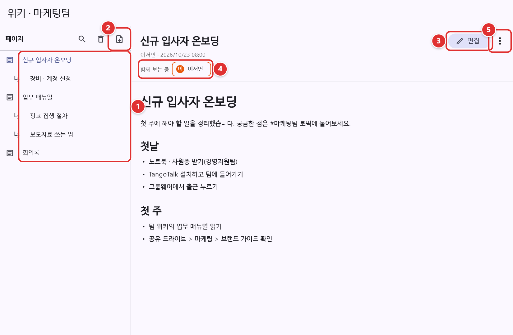
왼쪽(휴대폰은 첫 화면)에 페이지 목록이 위 · 아래 페이지로 들여 써 보입니다. 누르면 오른쪽에 열립니다.
새 페이지로 페이지를 만듭니다. 옆의 돋보기는 찾기, 휴지통은 지운 페이지 모음입니다.
편집을 누르면 본문을 고칩니다. 본문은 마크다운(# 제목, - 목록 등)으로 쓰고, 보기로 바꾸면 서식대로 보입니다. 따로 저장 단추는 없습니다 — 고치면 저절로 저장되고, 저장되는 동안 저장 중…이 보입니다.
함께 보는 중에 같은 페이지를 연 다른 사람이 색깔별로 보이고, 다른 사람이 고친 글이 바로 들어옵니다.
⋮(더보기)에서 하위 페이지 만들기 · 제목 바꾸기 · 옮기기 · 판 기록 · 휴지통으로를 합니다.
- 판 기록에서 예전 판을 열어 보고 이 판으로 되돌리기를 할 수 있습니다. 편집하는 동안 10분마다 판이 남습니다.
- 지운 페이지는 휴지통에서 되살리기합니다(만든 사람이나 팀 관리자가 지울 수 있습니다).
- 찾기로 제목 · 본문에서 찾습니다.
- 준회원은 읽기만 합니다. 화상회의 회의록도 위키에 새 페이지로 저장할 수 있습니다.
13공유 드라이브
팀마다 하나 있는 공용 파일 보관함입니다. 대화방에 흩어진 파일과 달리 폴더로 정리해 두고 팀원 모두가 함께 씁니다. 메뉴 › 툴 › 드라이브로 엽니다.

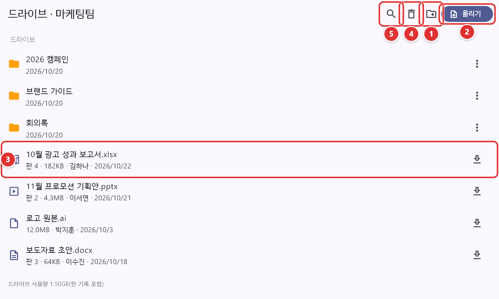
새 폴더로 폴더를 만들고(10단계까지), 위쪽 경로(드라이브 / 기획 / 2026)를 눌러 오갑니다.
올리기로 파일을 올립니다(여러 개 가능). PC에서는 파일을 화면에 끌어다 놓아도 됩니다.
파일 줄에 판 번호 · 크기 · 마지막으로 올린 사람 · 날짜가 보입니다. 파일을 누르면 내려받기 · 새 판 올리기 · 판 기록 · 이름 바꾸기 · 옮기기 · 휴지통으로가 보입니다.
휴지통에서 지운 파일 · 폴더를 되살리기하거나 영구 삭제합니다. 지우기는 만든 사람이나 팀 관리자가 합니다.
찾기로 파일 · 폴더 이름을 찾습니다. 아래에 드라이브가 쓰는 용량이 보입니다.
- 판(버전) — 같은 이름의 파일을 올리면 "새 판으로 올릴까요?"를 묻습니다. 판 기록에서 예전 판을 내려받거나 그 판으로 되돌릴 수 있습니다(파일마다 50판까지).
- 준회원은 보고 내려받기만 합니다.
14메일
이미 쓰고 있는 메일 계정(회사 메일 · 네이버 · Gmail · 다음 · 네이버웍스 · Microsoft 365)을 연결해 TangoTalk 안에서 메일을 받고 보냅니다. 메뉴 › 툴 › 메일로 엽니다. 타일의 숫자는 받은편지함의 안 읽은 메일 수입니다. 메일은 원래 메일 서버에 그대로 있어서, 다른 메일 프로그램에서 봐도 같습니다.
메일 계정 연결
처음 열면 메일 계정 연결 창이 뜹니다. 메일 서비스를 고르면 서버 주소 · 포트가 저절로 채워지고, 그 서비스에서 해 둘 일(IMAP 켜기 · 앱 비밀번호 만들기)이 보입니다.
이메일 주소와 비밀번호(대부분 앱 비밀번호)를 넣고 연결을 누릅니다. 연결이 안 되면 받는 쪽 · 보내는 쪽 중 어디가 왜 안 되는지 알려 줍니다. 관리자가 켜 두었다면 Gmail · Outlook은 Google 계정으로 로그인 · Microsoft 계정으로 로그인 단추로 브라우저에서 로그인해 연결할 수도 있습니다.
- 계정은 5개까지 연결합니다. 폴더 칸 맨 위의 계정을 눌러 바꾸고, 계정 더하기로 더합니다. 맨 앞 계정이 기본입니다(기본 계정으로).
- 관리자가 회사 도메인 메일을 서버에서 직접 받게 해 두었으면 회사 메일함(아이디@회사도메인)이 저절로 생깁니다.
- 연결 끊기는 이 서버에 둔 연결 정보만 지웁니다. 메일 서버의 메일은 그대로입니다.
메일 읽기와 정리

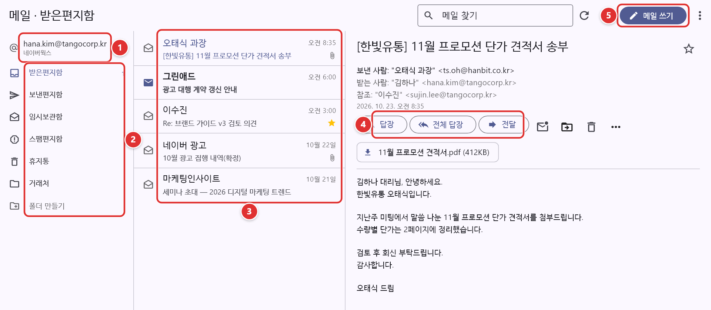
맨 왼쪽 위에 지금 보고 있는 계정이 있습니다. 눌러서 다른 계정으로 바꾸거나 계정 더하기를 합니다.
그 아래 폴더(받은편지함 · 보낸편지함 · 임시보관함 · 스팸편지함 · 휴지통과 내가 만든 폴더)를 고릅니다. 옆 숫자는 안 읽은 메일 수입니다.
가운데 목록에서 메일을 누르면 오른쪽에 열립니다. 안 읽은 메일은 굵게 보입니다.
읽는 칸의 답장 · 전체 답장 · 전달로 답합니다(메일 쓰기).
새 메일은 오른쪽 위 메일 쓰기로 씁니다.
- 넓은 창은 폴더 · 목록 · 읽기 세 칸, 휴대폰은 목록에서 눌러 읽습니다. 같은 대화의 메일은 한 줄로 묶이고 ⌄로 펼칩니다(⋯ › 대화로 묶어 보기로 끄고 켬).
- 바깥 그림은 처음에 가려져 있습니다(열면 보낸 쪽이 읽었는지 알 수 있어서). 그림 보기로 보이고, 믿는 보낸 사람이면 이 보낸 사람은 늘 보기를 누릅니다.
- 링크를 누르면 실제로 가는 주소를 먼저 보여 주고 물은 뒤 엽니다. 글자와 다른 곳으로 보내는 피싱 메일을 조심하세요.
- 중요 표시 · 안 읽음으로 · 옮기기 · 지우기(휴지통으로)를 합니다. 메일을 길게 누르거나 여러 통 고르기로 여러 통을 한꺼번에 정리합니다.
- 폴더 만들기로 폴더를 만들고, 내가 만든 폴더는 ⋮에서 이름 바꾸기 · 지우기를 합니다.
- 읽기 화면의 ⋯ › 대화방으로 보내기로 메일 요약과 첨부를 대화방에 올리고, 할 일로 만들기로 할 일을 만듭니다.
메일 쓰기
메일 쓰기를 누릅니다(읽던 메일이면 답장 · 전체 답장 · 전달).
받는 사람 · 참조 · 숨은 참조(쉼표로 여러 명)를 넣습니다. 쓰는 동안 같은 팀 사람과 전에 보낸 주소가 후보로 뜹니다.
제목과 본문을 쓰고 파일을 첨부합니다(10개 · 합계 20MB). 본문은 굵게 · 색 · 목록 같은 서식을 쓸 수 있습니다.
보내기를 누릅니다. 계정이 여럿이면 보내는 계정을 고를 수 있습니다.
쓰던 메일은 1분마다 임시보관함에 저절로 저장되고, 닫을 때도 임시 저장을 물어봅니다. 임시보관함에서 열어 이어 쓰기로 계속 씁니다.
받는 규칙 · 서명 · 알림
- 받는 규칙(⋯ › 받는 규칙) — 보낸 사람 · 받는 사람 · 제목 조건에 맞는 새 메일을 폴더로 옮기거나, 읽음 · 중요 표시를 하거나, 알리지 않게 합니다. 계정마다 50개까지, 위에서부터 차례로 겁니다.
- 서명(⋯ › 서명) — 계정마다 정하고, 새 메일 · 답장에 넣을지 따로 고릅니다.
- 새 메일 알림 — 서버가 3분마다 받은편지함을 확인해 새 메일을 알립니다(방해 금지 중이면 쉼). ⋯ 메뉴에서 계정마다 끌 수 있습니다.
- 메일 서버의 비밀번호를 바꿔 연결이 끊기면 화면 위에 이유와 계정 바꾸기가 뜹니다. 새 비밀번호로 다시 연결하세요.